Agricultural Biosecurity Starts Here
Advanced Veterinary Grade Disinfection Solutions For Modern Agriculture. Ubuntu Life Resources delivers scalable agricultural biosecurity solutions through SANI-99™ for AGRI — helping farms, poultry operations, abattoirs, dairies, hatcheries and food processing environments reduce pathogen risks and improve hygiene standards.
Agricultural Biosecurity · Clean Water · Food Security
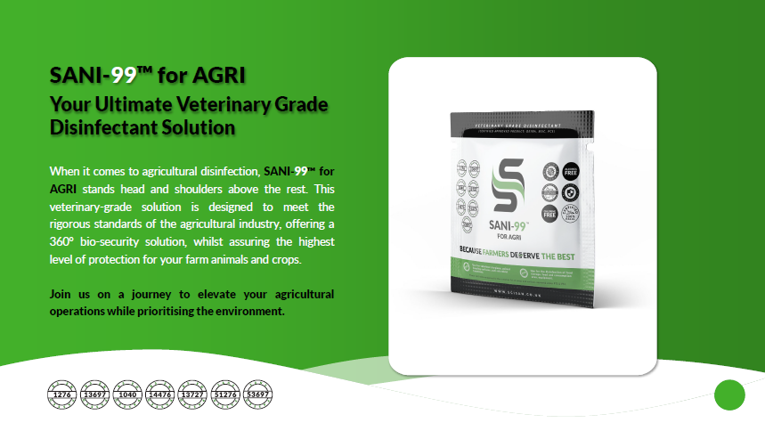
What Is SANI-99™ for AGRI?
SANI-99™ for AGRI is a veterinary and food grade agricultural disinfectant designed to support biosecurity across multiple agricultural sectors.
The solution has been developed to assist farms and agricultural facilities in reducing pathogen exposure while supporting hygiene, operational safety and disease prevention protocols.
SANI-99™ for AGRI provides:
- Broad-spectrum disinfection
- 360° biosecurity support
- High efficacy pathogen control
- Long-lasting residual activity
- Food and veterinary grade applications
- Agricultural equipment sanitation
- Facility and livestock area disinfection
Designed for modern agriculture, SANI-99™ for AGRI supports operations ranging from poultry and livestock farming to abattoirs, dairies, aquaculture and food processing facilities.
Key Features
- 360° Agricultural Biosecurity — comprehensive disinfection across livestock facilities, poultry housing, food processing environments, equipment sanitation and operational hygiene protocols.
- Alcohol & Chlorine Free — reduces harsh chemical exposure while maintaining strong disinfection performance.
- Safe Around Livestock — designed for agricultural environments where animal welfare remains essential.
- Food & Veterinary Grade — suitable for multiple agricultural and food-related applications.
- Halal Certified — supports diverse agricultural and food production requirements.
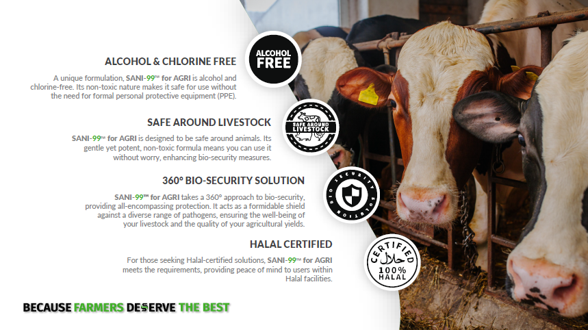
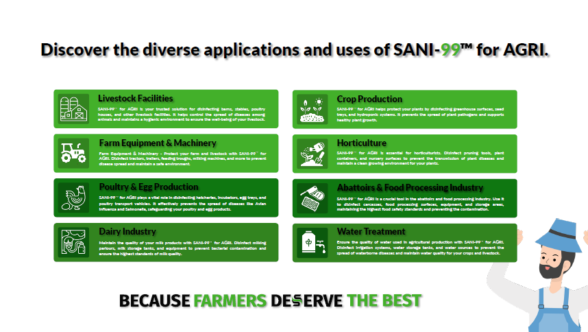
Industries & Applications
SANI-99™ for AGRI supports a wide range of agricultural industries and operational environments including:
- Poultry Farming
- Livestock Facilities
- Dairy Operations
- Hatcheries
- Abattoirs
- Cold Storage Facilities
- Food Processing Areas
- Aquaculture
- Crop Production
- Horticulture
- Agricultural Machinery
- Water Systems & Foot Baths
The solution can be integrated into both preventative hygiene protocols and active biosecurity management systems.
Eliminating Pathogens, Viruses & Diseases
SANI-99™ for AGRI has been formulated to assist in controlling and reducing exposure to a broad spectrum of pathogens affecting agricultural environments.
This includes support against:
- E.coli
- Salmonella
- Listeria monocytogenes
- Newcastle Disease
- Avian Influenza
- Swine Flu
- Foot & Mouth Disease
- Poxviridae
- Staphylococcus aureus
- Enterococcus hirae
- Pseudomonas aeruginosa
Its broad-spectrum disinfection capabilities support improved operational hygiene across agricultural sectors.
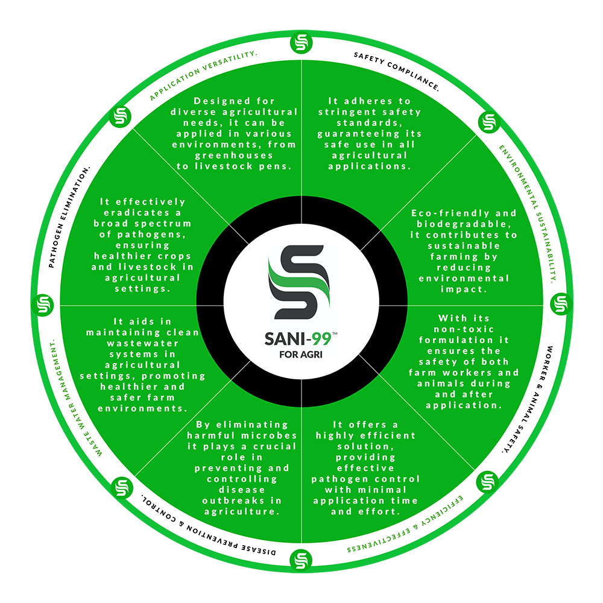
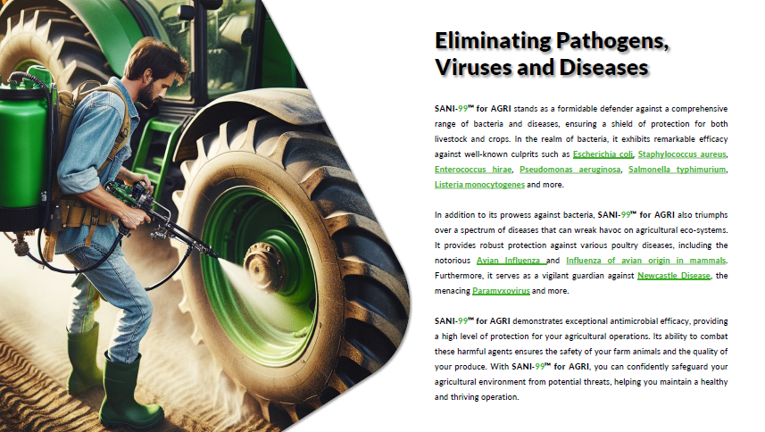
Advanced Poultry Biosecurity
The poultry industry faces increasing pressure from airborne disease transmission, Avian Influenza outbreaks and operational hygiene risks.
SANI-99™ for AGRI supports poultry biosecurity protocols through:
- Poultry housing disinfection
- Fogging applications
- Airborne pathogen reduction support
- Surface sanitation
- Dust suppression support
- Foot bath applications
- Equipment sanitation
The fogging application process assists in improving coverage throughout poultry facilities while supporting operational hygiene standards.
Abattoirs & Food Processing
SANI-99™ for AGRI supports hygiene management within:
- Abattoirs
- Meat processing facilities
- Carcass washing systems
- Equipment sanitation
- Biosecurity control areas
- Food processing environments
Applications include:
- Equipment disinfection
- Surface sanitation
- Carcass dipping
- Processing area disinfection
- Worker hygiene support
- Facility sanitation
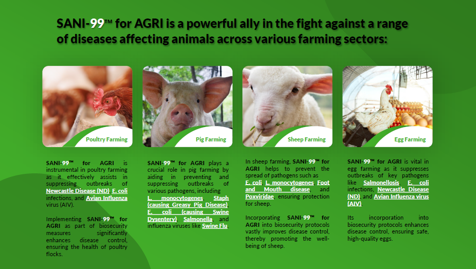
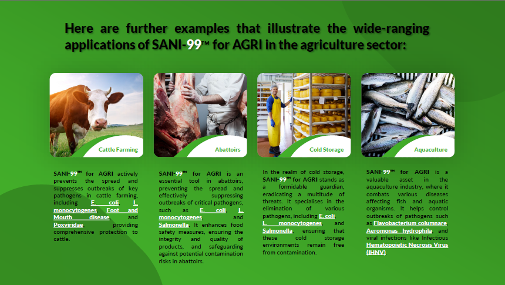
Certifications & Approvals
SANI-99™ for AGRI aligns with multiple international and agricultural disinfection standards and approvals including:
- DEFRA Approval
- ECHA Approval
- BEIC Approval
- EN1276
- EN13697
- EN14476
- EN1040
- EN13727
- SANS 51276
- SANS 53697
These certifications support its use across veterinary hygiene, agricultural biosecurity and food-related operational environments.
Flexible Application Methods
SANI-99™ for AGRI supports multiple agricultural application methods including:
- Fogging
- Pressure Washers
- Sprayers
- Foot Baths
- Dip Tanks
- Handheld Sprayers
- Soaking Tubs
- Surface Wipes
- Agricultural Machinery Sanitation
This flexibility allows integration into both small-scale and industrial agricultural operations.
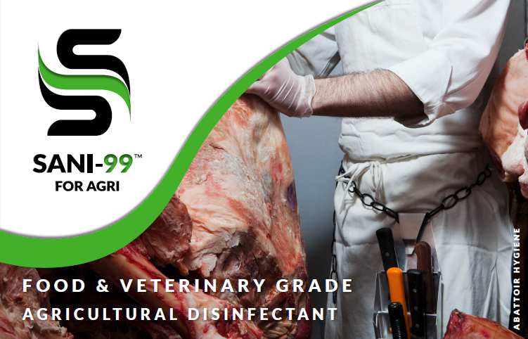
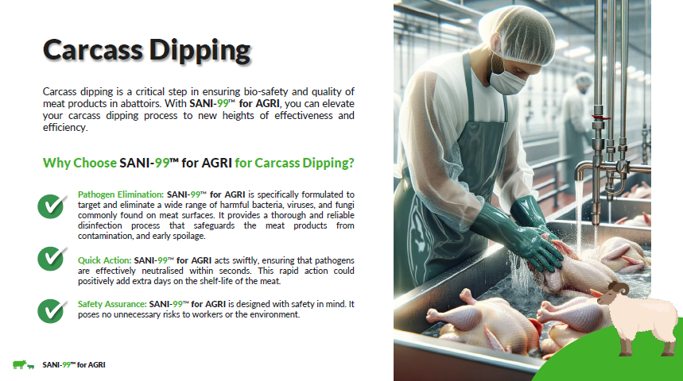
Available Product Formats
96g Sachets
Ideal for backpack sprayers, fogging systems, foot baths, small-scale sanitation and portable applications.
1kg – 25kg Tubs
Ideal for pressure washers, large agricultural operations, IBC systems, industrial sanitation and commercial agricultural deployment.
Smarter Transport. Lower Environmental Impact.
At Ubuntu Life Resources, sustainability and operational efficiency form part of our long-term agricultural biosecurity vision.
SANI-99™ for AGRI is supplied in concentrated powder form, significantly reducing transport weight, storage requirements and plastic container usage compared to traditional pre-mixed disinfectants.
Example:
This dramatically improves logistics efficiency, deployment scalability, storage management, distribution capability and carbon footprint reduction. Designed for commercial farms, poultry operations, abattoirs, distributors, government biosecurity programmes and emergency outbreak response.
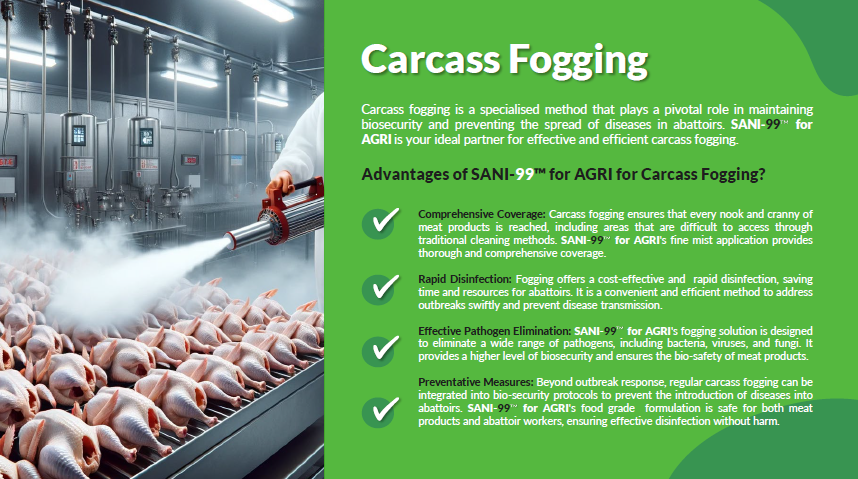
Tailored Agricultural Biosecurity Solutions
Different agricultural environments face different pathogen risks and operational challenges.
Poultry Operations
Fogging solutions for poultry house disinfection, airborne pathogen reduction support, dust suppression, surface sanitation and improved hygiene management.
Abattoirs & Food Processing
Carcass washing protocols, equipment sanitation, surface disinfection, worker hygiene support, processing area sanitation and biosecurity compliance measures.
Piggeries & Livestock
Facility sanitation, livestock area disinfection, equipment hygiene, disease prevention support and operational biosecurity.
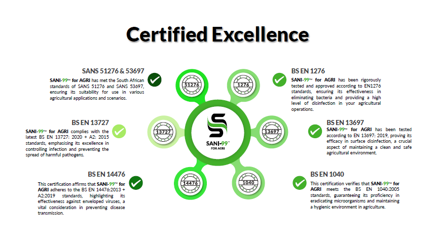
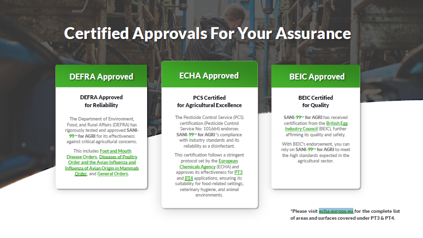
Simple To Deploy
Standard Sachet Mixing Example: 96g Sachet + 16 Litres Water
Coverage guidelines:
- High contamination: up to 160m²
- Medium contamination: up to 400m²
- Low contamination: up to 800m²
The concentrated formula allows scalable deployment while simplifying transport and storage requirements.
Why Ubuntu Life Resources
Ubuntu Life Resources focuses on supporting:
- Agricultural Biosecurity
- Clean Water Solutions
- Food Security Initiatives
We work alongside agricultural networks, institutional stakeholders and operational partners to help strengthen hygiene and biosecurity standards across Africa and international markets.
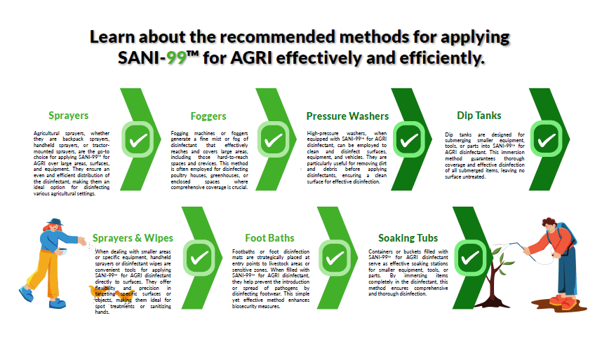
Ready to Discuss Agricultural Biosecurity Solutions?
We welcome engagement from farms, poultry operations, dairies, abattoirs, food processing facilities, agricultural groups, government departments, distributors and biosecurity stakeholders.
- Farms
- Poultry Operations
- Dairies
- Abattoirs
- Food Processing Facilities
- Agricultural Groups
- Government Departments
- Distributors
- Biosecurity Stakeholders
sanchia@ubuntuliferesources.co.za · www.ubuntuliferesources.co.za


Sanchia-Lynn Smit
CEO / Founder, Ubuntu Life Resources